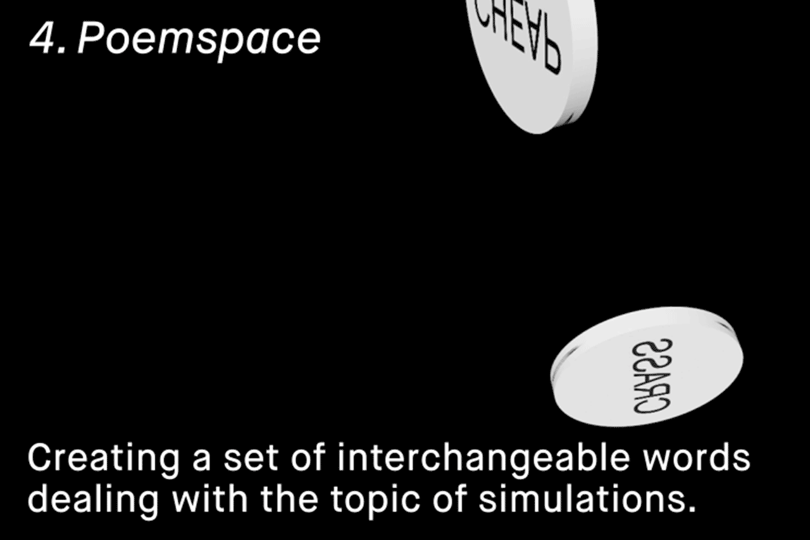

?
We have entered a phase in computer-generated image making where objects of reality undergo processes of conversion, re-interpretation, synthetic generation, and simulation; How will the degradation of matter into the artificial affect the way we perceive the material world? Does the map truly precede the territory?